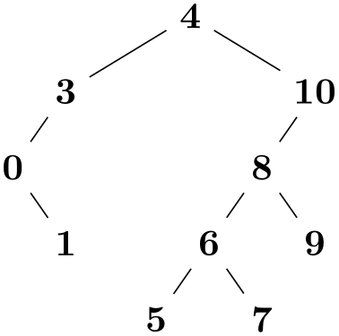
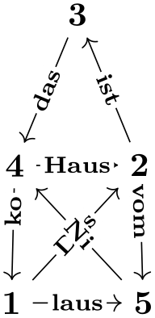
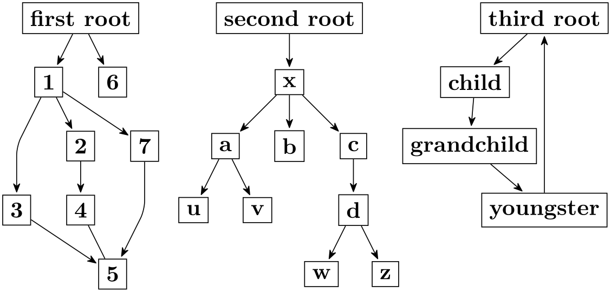
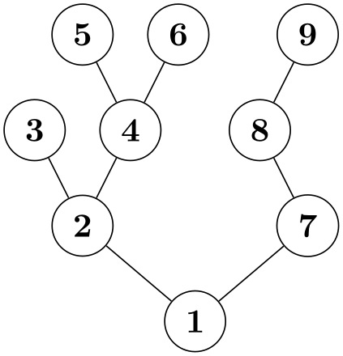
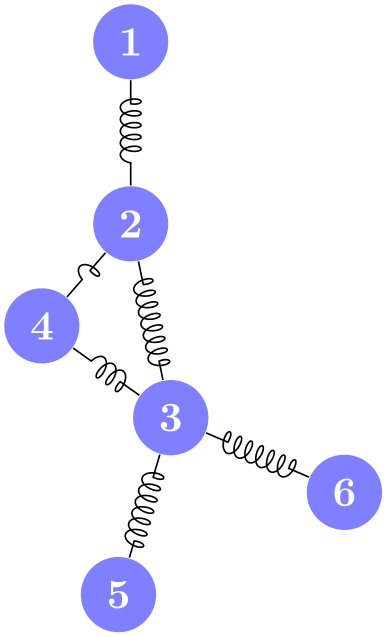

The TikZ and PGF Packages
Manual for version 3.1.10
Graph Drawing
27 Introduction to Algorithmic Graph Drawing¶
by Till Tantau
27.1 What Is Algorithmic Graph Drawing?¶
Algorithmic graph drawing (or just graph drawing in the following) is the process of computing algorithmically where the nodes of a graph are positioned on a page so that the graph “looks nice”. The idea is that you, as human (or you, as a machine, if you happen to be a machine and happen to be reading this document) just specify which nodes are present in a graph and which edges are present. Additionally, you may add some “hints” like “this node should be near the center” or “this edge is pretty important”. You do not specify where, exactly, the nodes and edges should be. This is something you leave to a graph drawing algorithm. The algorithm gets your description of the graph as an input and then decides where the nodes should go on the page.


\usetikzlibrary {graphs,graphdrawing,quotes} \usegdlibrary
{force}
\tikz \graph [spring layout,
edge quotes mid,
edges={nodes={font=\scriptsize, fill=white, sloped, inner sep=1pt}}]
{
1
->["Das"] 2
->["ist"] 3
->["das"] 4
->["Haus"]
2
->["vom" near start] 5
->["Ni"] 4
->["ko" near start]
1
->["laus", orient=right] 5;
};
Naturally, graph drawing is a bit of a (black?) art. There is no “perfect” way of drawing a graph, rather, depending on the circumstances there are several different ways of drawing the same graph and often it will just depend on the aesthetic sense of the reader which layout he or she would prefer. For this reason, there are a huge number of graph drawing algorithms “out there” and there are scientific conference devoted to such algorithms, where each year dozens of new algorithms are proposed.
Unlike the rest of pgf and TikZ, which is implemented purely in TeX, the graph drawing algorithms are simply too complex to be implemented directly in TeX. Instead, the programming language Lua is used by the graphdrawing library – a programming language that has been integrated into recent versions of TeX. This means that (a) as a user of the graph drawing engine you run TeX on your documents in the usual way, no external programs are called since Lua is already integrated into TeX, and (b) it is pretty easy to implement new graph drawing algorithms for TikZ since Lua can be used and no TeX programming knowledge is needed.
27.2 Using the Graph Drawing System¶
“Users” of the graph drawing engine can invoke the graph drawing algorithms often by just adding a single option to their picture. Here is a typical example, where the layered layout option tells TikZ that the graph should be drawn (“should be laid out”) using a so-called “layered graph drawing algorithm” (what these are will be explained later):

\usetikzlibrary {arrows.meta,graphs,graphdrawing}
\usegdlibrary {layered}
\tikz [>={Stealth[round,sep]}]
\graph [layered layout, components go right top aligned, nodes=draw, edges=rounded corners]
{
first
root
->
{1
->
{2, 3, 7} ->
{4, 5}, 6
}, 4
--
5;
second
root
->
x
->
{a
->
{u,v}, b, c
->
d
->
{w,z} };
third
root
->
child
->
grandchild
->
youngster
->
third
root;
};
Here is another example, where a different layout method is used that is more appropriate for trees:

A final example, this time using a “spring electrical layout” (whatever that might be…):

\usetikzlibrary {decorations.pathmorphing,graphdrawing}
\usegdlibrary {force}
\tikz [spring electrical layout, node distance=1.3cm,
every edge/.style={
decoration={coil, aspect=-.5, post
length=1mm,
segment
length=1mm, pre
length=2mm},
decorate, draw}]
{
\foreach \i in
{1,...,6}
\node (node \i) [fill=blue!50, text=white, circle] {\i};
\draw (node 1) edge
(node 2)
(node 2) edge
(node 3)
edge
(node 4)
(node 3) edge
(node 4)
edge
(node 5)
edge
(node 6);
}
In all of the example, the positions of the nodes have only been computed after all nodes have been created and the edges have been specified. For instance, in the last example, without the option spring electrical layout, all of the nodes would have been placed on top of each other.
27.3 Extending the Graph Drawing System¶
The graph drawing engine is also intended to make is (relatively) easy to implement new graph drawing algorithms. These algorithms can either be implemented in the Lua programming language (which is much easier to program than TeX itself) or in C/C++ (but at a great cost regarding portability). The Lua code for a graph drawing algorithm gets an object-oriented model of the input graph as an input and must just compute the desired new positions of the nodes. The complete handling of passing options and configurations back-and-forth between the different TikZ and pgf layers is handled by the graph drawing engine.
As a caveat, the graph drawing engine comes with a library of functions and methods that simplify the writing of new graph drawing algorithms. As a typical example, when you implement a graph drawing algorithm for trees, you typically require that your input is a tree; but you can bet that users will feed all sorts of graphs to your algorithm, including disjoint unions of cliques. The graph drawing engine offers you to say that a precondition to running your algorithm is that the graph is a tree and instead of the original graph your algorithm will be provided with a spanning tree of the graph on which it can work. There are numerous further automatic pre- and postprocessing steps that include orienting, anchoring, and packing of components, to name a few.
The bottom line is that the graph drawing engine makes it easy to try out new graph drawing algorithms for medium sized graphs (up to a few hundred nodes) in Lua. For larger graphs, C/C++ code must be used.
27.4 The Layers of the Graph Drawing System¶
Even though the graph drawing system presented in the following sections was developed as part of pgf, it can be used independently of pgf and TikZ: It was (re)designed so that it can be used by arbitrary programs as long as they are able to run Lua. To achieve this, the graph drawing system consists of three layers:
-
1. At the “bottom” we have the algorithmic layer. This layer, written in Lua, contains all graph drawing algorithms. Interestingly, options must also be declared on this layer, so an algorithm together with all options it uses can and must be specified entirely on this layer. If you intend to implement a new graph drawing algorithm, you will only be interested in the functionality of this layer.
Algorithm “communicate” with the graph drawing system through a well-defined interface, encapsulated in the class InterfaceToAlgorithms.
-
2. At the “top” we have the display layer. This layer is not actually part of the graph drawing system. Rather, it is a piece of software that “displays” graphs and TikZ is just one example of such a software. Another example might be a graph editor that uses the graph drawing system to lay out the graph it displays. Yet another example might be a command line tool for drawing graphs described in a file. Finally, you may also wish to use the graph drawing system as a simple subroutine for rendering graphs produced in a larger program.
Since the different possible instantiations of the display layer are quite heterogeneous, all display layers must communicate with the graph drawing system through a special interface, encapsulated in the class InterfaceToDisplay.
The main job of this class is to provide a set of methods for specifying that a graph has certain nodes and edges and that certain options have been set for them. However, this interface also allows you to query all options that have been declared by algorithms, including their documentation. This way, an editor or a command line tool can display a list of all graph drawing algorithms and how they can be configured.
-
3. The algorithm layer and the display layer are “bound together” through the binding layer. Most of the bookkeeping concerning the to-be-drawn graphs is done by the graph drawing system independently of which algorithm is used and also independently of which display layer is used, but some things are still specific to each display layer. For instance, some algorithms may create new nodes and the algorithms may then need to know how large these nodes will be. For this, the display layer must be “queried” during a run of the algorithm – and it is the job of the binding layer to achieve this callback.
As a rule, the binding layer implements the “backward” communication from the graph drawing system back to the display layer, while the display layer’s interface class provides only functions that are called from the display layer but which will not “talk back”.
All of the files concerned with graph drawing reside in the graphdrawing subdirectory of generic/pgf.
27.5 Organisation of the Graph Drawing Documentation¶
The documentation of the graph drawing engine is structured as follows:
-
1. Following this overview section, the next section documents the graph drawing engine from “the TikZ user’s point of view”. No knowledge of Lua or algorithmic graph drawing is needed for this section, everyone who intends to use algorithmic graph drawing in TikZ may be interested in reading it.
-
2. You will normally only use TikZ’s keys and commands in order to use the graph drawing system, but, internally, these keys call more basic pgf commands that do the “hard work” of binding the world of TeX boxes and macros to the object-oriented world of Lua. Section 29 explains how this works and which commands are available for authors of packages that directly need to use the graph drawing system inside pgf, avoiding the overhead incurred by TikZ.
Most readers can safely skip this section.
-
3. The next sections detail which graph drawing algorithms are currently implemented as part of the TikZ distribution, see Sections 30 to 35.
-
4. Section 36 is addressed at readers who wish to implement their own graph drawing algorithms. For this, no knowledge at all of TeX programming is needed. The section explains the graph model used in Lua, the available libraries, the graph drawing pipeline, and everything else that is part of the Lua side of the engine.
-
5. Section 38 details the display layer of the graph drawing system. You should read this section if you wish to implement a new display system (that is, a non-TeX-based program) that intends to use the graph drawing system.
-
6. Section 39 explains how binding layers can be implemented. This section, too, is of interest only to readers who wish to write new display systems.
27.6 Acknowledgements¶
Graph drawing in TikZ began as a student’s project under my supervision. Renée Ahrens, Olof-Joachim Frahm, Jens Kluttig, Matthias Schulz, and Stephan Schuster wrote the first prototype of a graph drawing system inside TikZ that uses LuaTeX for the implementation of graph drawing algorithms.
This first, early version was greatly extended on the algorithmic side by Jannis Pohlmann who wrote his Diploma thesis on graph drawing under my supervision. He implemented, in particular, the Sugiyama method (layered layout) and force based algorithms. Also, he rewrote some of the code of the prototype.
At some point it became apparent that the first implementation had a number of deficiencies, both concerning the structure, the interfaces, and (in particular) the performance. Because of this, I rewrote the code of the graph drawing system, both on the TeX side and on the Lua side in its current form. However, I would like to stress that without the work of the people mentioned above graph drawing in TikZ would not exist.
The documentation was written almost entirely by myself, though I did copy some paragraphs from Jannis’s Diploma thesis, which I can highly recommend everyone to read.
In the future, I hope that other people will contribute algorithms, which will be available as libraries.